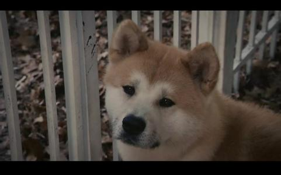
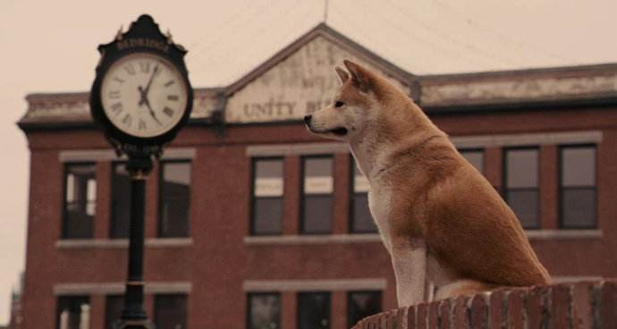
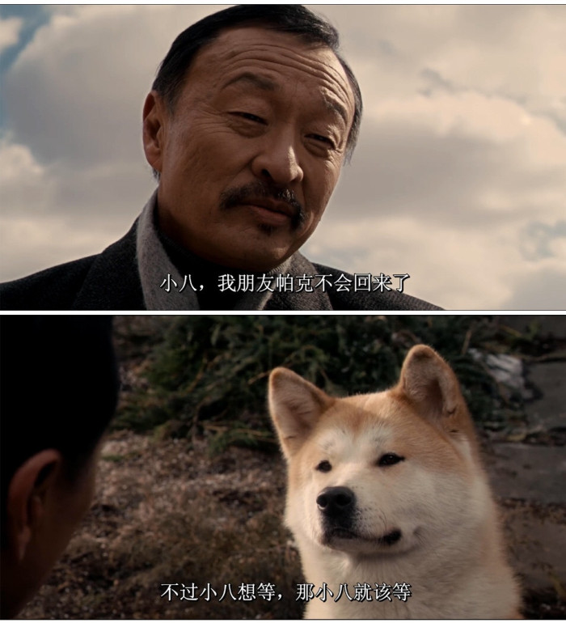
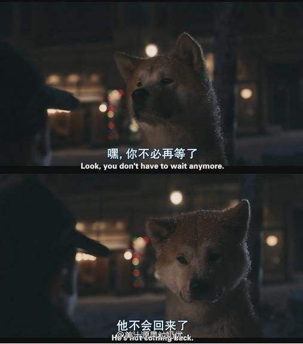
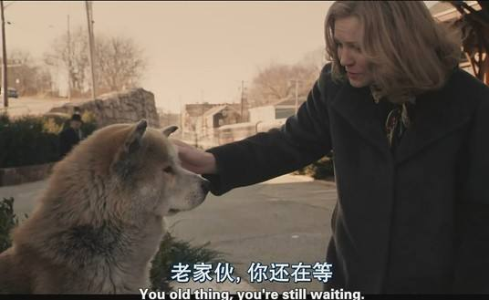
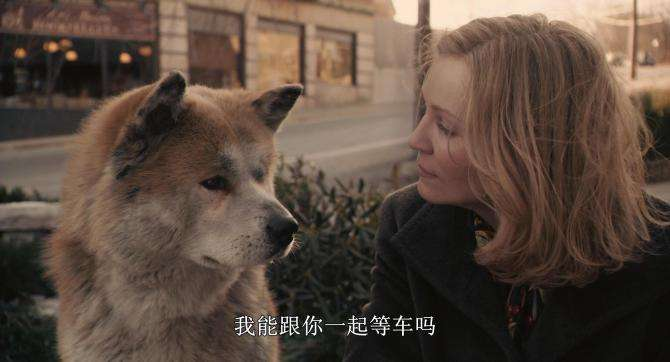
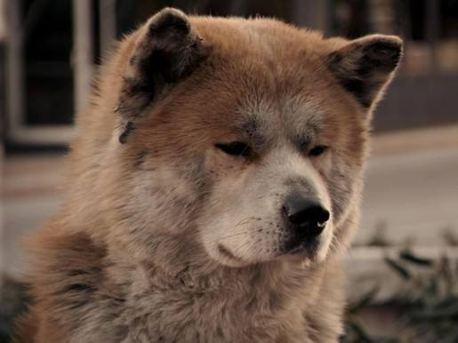
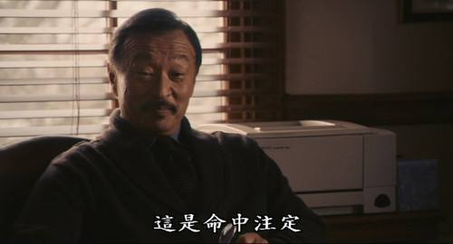

大学教授帕克在小镇在车站上偶遇一只可怜的小秋田犬，它孤苦无依的身影惹起他的怜悯，虽然妻子极力反对，想尽办法要把它送走，但看到丈夫和女儿对它无微不至的由衷喜爱，终于决定让它成为家庭一员，帕克为它取名“八公”。
八公陪着帕克全家一起成长，从小狗渐渐变成庞然大物。八公每天准时陪伴帕克上班，傍晚五点准时出现在车站门口迎接帕克下班，这可是他们的约会时光。在小镇车站站长，卖热狗的小贩，附近商店的老板娘的眼中这都是已经习以为常的画面；看到帕克从车站出来叫出那一声熟悉的“Hachi”，八公兴奋地扑上前去撒娇的样子，已经成了车站每天上演的故事。然而在八公学会捡球的那一天，帕克开心且骄傲，但也是最后一次两人的珍贵回忆。
就在那一天，帕克在大学上课时突然倒下，他因心肌梗塞突发而死亡，再也没有回到车站。之后每天傍晚五点，八公都来到火车站里等候、凝视。第二天、第三天，从夏季到秋季，九年时间里，八公依然风雨无改，直到它最后死去.
故事要从车站说起。
小八出现在一个陌生的火车站中，在货运途中不慎摔落。
可怜的小八就这样成了孤儿。
庆幸的是，它遇见了旅途归来的教授-帕克。

教授看它孤苦无依的样子很是心疼，
于是，便把这只秋田犬带回了家。
夜里，八公突然跑上了楼，把本来就反感狗狗的妻子吓得不轻。
但看到狗狗和教授在一起犯二的样子，妻子还是动容了。最终，小八成为了这个家里的一员。
教授为它取名：八公。

日子就这样一天一天的过去了，小八陪着教授一家一起成长。
在这些日子里，小八也给大家带来了很多欢乐。
小八每天早上八点准时陪教授上班，傍晚五点准时出现在车站花坛等待教授下班。
每每见到教授出站时，八公总会扑上去和教授腻歪一番，用自己的小脑袋蹭教授。
就这样，慢慢地，他俩便成为了车站最有爱的焦点，融化了很多行人和百姓的心。

春 夏 秋 冬，八公就这样静静地陪着教授。
期间，也以家庭成员的身份参加了教授女儿的婚礼。

突然有一天，八公不再愿意送教授去车站，甚至对着教授不停的吼着。
更令人惊讶的是，八公突然学会了主人期盼已久的事情——能够捡球送到主人手里。
它叫着、吠着，想要挽回主人，可是它说不了话。

是的，八公意识到了什么，所以它用它能做的任何事情去挽留主人。
遗憾的是，教授未能明白八公的心思，还是上了这最后一趟列车去上班。
只是再也没有回来。

毫不知情的八公还是像往常一样，一如既往地在车站等着教授的归来。
后来，教授女儿搬家带走了八公。
然而，忠实的八公却一次次从家里逃出来，跑回原来的房子，但早已物是人非。
之后，八公又到了车站。
无论严寒酷暑，八公依然静静地守候着。
虽然它一次次地失望而归，但每天的那个时刻还是会准时出现在车站等待着它的主人。
盼望着就像曾经一样，教授能够在5点05分推开车站的大门，亲切的叫它一声“Hachi”，并慈爱地摸摸它的头。

可这一切早已是奢望，八公就这样一直等了十年。
十年**......
人的一生也许会爱过很多狗狗，但狗却会用它的一生来爱你。

后来教授的妻子回到这个失去丈夫的地方，在看到八公的那一刹那，她简直不敢相信自己的眼睛。
当时的八公已经显得那么沧桑，甚至有些痴老。

但等待主人是它心中唯一的信念。
八公知道自己即将走到生命的尽头，傍晚火车汽笛声响起，它顶着风雪，蹒跚地走向车站。
有人说，狗狗会在自己临终前找到一个自己喜欢的地方安静地离开。
我想，车站就是八公的那个“地方”。
那个曾经他们相遇的地方。
即使主人没有回来，它也决定要有始有终。就算用尽最后的生命也要迎接自己的主人，哪怕看一眼也好。

最终，八公吃力地爬上了那个属于它的台阶，缓缓地趴下，然后慢慢地闭上了双眼。
在梦里，八公仿佛回到了十年前，教授推开车站大门，一声“Hachi” 一个拥抱，紧紧依偎在一起。

电影里出现很多次小八待在小黑屋，从门缝看着教授的家，听着教授和妻子的声音。
那种眼神，求而不得。
教授有妻子、有女儿，可小八的生命里只有教授。

其实很多人都像八公一样，有些事有些人明知道回不来，却还苦苦等待着，终其一生，满是遗憾。